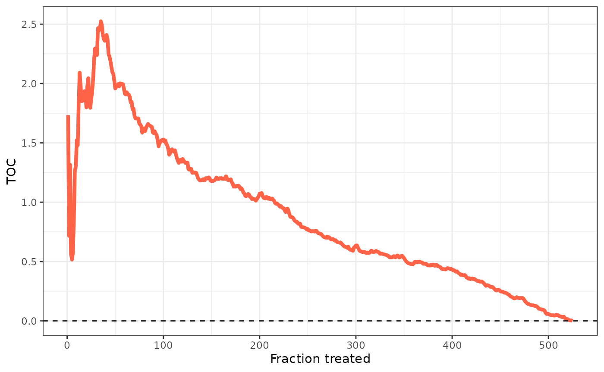

Short Tutorial
evalue-cates-short-tutorial.RmdIn this tutorial, we show how to use the evaluCATE
package to estimate and make inference about key features of
heterogeneous treatment effects. The discussion is loosely based on
Chernozhukov et al. (2017), Yadlowsky et al. (2021), and Imai and Li
(2022).1
The core idea is that applying machine learning tools to the estimation of heterogeneous treatment effects may produce “low-quality” estimates of the Conditional Average Treatment Effects (CATEs). Thus, we move our target to features of the CATEs that \(a)\) are of interest to researchers and policy makers, and \(b)\) can be consistently estimated under mild assumptions. These features are:
- Best Linear Predictor (BLP) of the actual CATEs using the estimated CATEs;
- Sorted Group Average Treatment Effects (GATES).
- Rank-Weighted Average Treatment Effects (RATEs) induced by the estimated CATEs.
To estimate these objects, we first construct estimates of the CATEs
using an observed training sample, and we then post-process them using
an external validation sample. All of this is performed by calling the
evalue_cates function. Results allow us to evaluate the
quality of our CATEs estimates and to assess whether we detect
systematic heterogeneous effects.
Before diving in the technical details, we need to define notation:
- \(Y_i\) → Observed outcome;
- \(D_i \in \{ 0, 1\}\) → Treatment indicator;
- \(X_i\) → Covariate vector;
- \(\mu ( X_i ) = \mathbb{E} [ Y_i | X_i ]\) → Conditional mean of \(Y_i\) given \(X_i\);
- \(\mu_d ( X_i ) = \mathbb{E} [ Y_i | X_i, D_i = d ]\) → Conditional mean of \(Y_i\) given \(X_i\) among those units such as \(D_i = d\);
- \(p ( X_i ) = \mathbb{P} [ D_i = 1 | X_i ]\) → Propensity score;
- \(H_i = \frac{D_i - p (X_i)}{p (X_i) ( 1 - p (X_i) )}\) → Horvitz-Thompson operator;
- \(w ( X_i ) = \frac{1}{p ( X_i ) [ 1 - p ( X_i )]}\) → Propensity score weights;
- \(\Gamma_i := \mu_1 ( X_i ) - \mu_0 ( X_i ) + \frac{D_i [ Y_i - \mu_1 ( X_i ) ]}{p ( X_i )} - \frac{[ 1 - D_i ] [ Y_i - \mu_0 ( X_i ) ]}{1 - p ( X_i )}\) → Doubly-robust scores;
- \(\tau ( X_i ) = \mathbb{E} [ Y_i ( 1 ) - Y_i ( 0 ) | X_i ]\) → CATEs.
Throughout the rest of the tutorial, we assume SUTVA and unconfoundedness (e.g., Imbens and Rubin, 2015).
Calling the evalue_cates Function
When calling the evalue_cates function, we need to
supply the whole sample using the first three arguments: Y,
D, and X, corresponding to \(Y_i\), \(D_i\), and \(X_i\). Additionally, the user must provide
estimates of the CATEs \(\hat{\tau} ( X_i
)\) obtained using only the training sample by using the
cates argument. Finally, the argument is_train
must consist of a logical vector with the TRUEs denoting
those observations used to estimate the CATEs. This allows the
evalue_cates function to know which observations must be
used to post-process the CATEs estimates.
Let us see an example. First, we generate some data.
## Generate data.
set.seed(1986)
n <- 1000
k <- 2
X <- matrix(rnorm(n * k), ncol = k)
colnames(X) <- paste0("x", seq_len(k))
D <- rbinom(n, size = 1, prob = 0.5)
mu0 <- 0.5 * X[, 1]
mu1 <- 0.5 * X[, 1] + X[, 2]
Y <- mu0 + D * (mu1 - mu0) + rnorm(n)Second, we need to split the sample into a training sample and a validation sample or arbitrary sizes. Here we perform an approximate 50/50 split.
## Sample split.
train_idx <- sample(c(TRUE, FALSE), length(Y), replace = TRUE)
X_tr <- X[train_idx, ]
X_val <- X[!train_idx, ]
D_tr <- D[train_idx]
D_val <- D[!train_idx]
Y_tr <- Y[train_idx]
Y_val <- Y[!train_idx]Third, we have to estimate the CATEs using only the training sample. Any methodology can be used. Here, we use a honest causal forest.
## CATEs estimation.
suppressWarnings(library(grf))
forest <- causal_forest(X_tr, Y_tr, D_tr) # We use only the training sample.
cates <- predict(forest, X)$predictions # We predict on the whole sample.We are now able to call the evalue_cates function. As
mentioned above, we need to supply \(Y_i\), \(D_i\), and \(X_i\) using the first three arguments. The
fourth argument is used to provide estimates \(\hat{\tau} ( X_i )\) obtained using only
the training sample. Finally, the fifth argument must be a logical
vector denoting which observations belong to the training sample.
We also have four optional arguments that we can use to supply estimates of the nuisance functions \(p ( \cdot )\), \(\mu ( \cdot )\), \(\mu_0 ( \cdot )\), and \(\mu_1 ( \cdot )\). Be careful, as these estimates must be obtained using only the training sample. If not provided by the user, these functions are estimated internally via honest regression forests using only the training sample. In this vignette, we generated our data by mimicking a Bernoulli experiment, thus we have knowledge of the actual propensity score (0.5 for all units). We supply these values in the call below and let the function estimate the other nuisances internally.2
Finally, we have four additional optional arguments. The first of
these arguments controls the number of groups to be formed for the GATES
analysis (details below), with the default number equal to five. The
second of these arguments controls the number of bootstrap replications
used to estimate the standard error of the estimated RATEs (details
below). The third of these arguments controls how to rank units for the
RATE estimation (according to either increasing or decreasing values of
the estimated CATEs). The fourth of these arguments controls whether the
evalue_cates function should print the status of progress
on the console. We use the default of 5 groups, 200 bootstrap
replications, the treatment considered to be beneficial, and prevent the
function from printing the progresses.
## Call main function.
pscore <- rep(0.5, length(Y_val)) # True propensity scores.
evaluation <- evalue_cates(Y, D, X, cates, train_idx, pscore = pscore, verbose = FALSE)After handling the inputs and running some checks, the
evalue_cates function estimates the BLP, the GATES, and the
RATEs using only the validation sample. In the following, we detail the
main results returned by the function.
Best Linear Predictor
The first object estimated by the evalue_cates function
is the BLP of the actual CATEs using the estimated CATEs:
\[ BLP [\tau ( X_i ) | \hat{\tau} ( X_i )] := \beta_1 + \beta_2 [ \hat{\tau} ( X_i ) - \mathbb{E} [ \hat{\tau} ( X_i ) ] ]\] with \(\beta_1 = \mathbb{E} [ \tau ( X_i ) ]\) the average treatment effect, and \(\beta_2 = Cov [ \tau ( X_i ), \hat{\tau} ( X_i ) ] / Var [ \hat{\tau} ( X_i ) ]\). The BLP is of interest for two main reasons:
- First, it is a refined predictor of \(\tau ( \cdot )\), in the sense that it is an unbiased predictor of \(\tau ( \cdot )\) and improves over \(\hat{\tau} ( \cdot )\) in the mean squared error sense (Chernozhukov et al., 2017);
- Second, rejecting the hypothesis \(\beta_2 = 0\) means that \(a)\) there is systematic heterogeneity, and \(b)\) \(\hat{\tau} ( \cdot )\) is a “good” predictor.3
The evalue_cates function estimates the BLP using three
different strategies, each involving fitting a suitable linear model
using only observations in the validation sample.4 5
- Weighted Residuals:
\[ Y_i = \beta_1 [ D_i - p ( X_i ) ] +
\beta_2 \{ [ D_i - p ( X_i ) ] [ \hat{\tau} ( X_i ) - \mathbb{E}_{n, V}
[ \hat{\tau} ( X_i ) ] ] \} + \epsilon_i \] with the model fitted
via WLS using weights \(w ( X_i)\), and
\(\mathbb{E}_{n, V}\) denoting the
sample average with respect to the validation sample. Results can be
accessed by calling evaluation$BLP$wr_none.
evaluation$BLP$wr_cddf1,
evaluation$BLP$wr_cddf2, and
evaluation$BLP$wr_mck1 allow the user to access the results
of the models that build on the one displayed here by adding different
sets of optional covariates (check the denoising
vignette for details).
- Horvitz-Thompson
\[ H_i Y_i = \beta_1 + \beta_2 \{
\hat{\tau} ( X_i ) - \mathbb{E}_{n, V} [ \hat{\tau} ( X_i ) ] \} +
\epsilon_i \] with the model fitted via OLS. Results can be
accessed by calling evaluation$BLP$ht_none.
evaluation$BLP$ht_cddf1,
evaluation$BLP$ht_cddf2,
evaluation$BLP$ht_mck1,
evaluation$BLP$ht_mck2, and
evaluation$BLP$ht_mck3 allow the user to access the results
of the models that build on the one displayed here by adding different
sets of optional covariates (check the denoising
vignette for details).
- AIPW
\[ \hat{\Gamma}_i = \beta_1 + \beta_2 \{
\hat{\tau} ( X_i ) - \mathbb{E}_{n, V} [ \hat{\tau} ( X_i ) ] \} +
\epsilon_i \] with the model fitted via OLS and the doubly-robust
scores \(\Gamma_i\) estimated
internally using the the validation sample and 5-fold cross-fitting.
Results can be accessed by calling evaluation$BLP$aipw.
Sorted Group Average Treatment Effects
The second object estimated by the evalue_cates function
are the sorted group average treatment effects, with the groups formed
by cutting the distribution of \(\hat{\tau} (
\cdot )\) into \(K\) bins:6
\[ \gamma_k := \mathbb{E} [ \tau ( X_i ) | \ell_{k - 1} \leq \hat{\tau} ( X_i ) < \ell_k ], \,\,\, k = 1, \dots, K\] with \(- \infty = \ell_0 < \ell_1 < \dots < \ell_K < + \infty\). The GATES are of interest for two main reasons:
- First, they provide a nonlinear predictor of \(\tau ( \cdot )\), as they provide the BLP of \(\tau ( \cdot )\) using the group indicators \(\mathbb{1} ( \ell_{k - 1} \leq \hat{\tau} ( X_i ) < l_k )\) (Chernozhukov et al., 2017);
- Second, they allow us to assess whether there is systematic heterogeneity. For example, one could test the hypothesis that all the GATES are the same \(\gamma_1 = \dots = \gamma_K\), or that the difference between the largest and the smallest GATES is zero \(\gamma_1 = \gamma_K\). If we reject these hypotheses, the GATES also provide a way to quantify how different groups show differential reactions to the treatment.
The evalue_cates function estimates the GATES using the
same three strategies used for the BLP estimation. Additionally,
evalue_cates also implements a nonparametric estimator of
the GATES following the approach of Imai and Li (2022). As before,
estimation is performed using only observations in the validation
sample.
- Weighted Residuals
\[ Y_i = \sum_{k = 1}^K \gamma_k [ D_i - p
( X_i ) ] \mathbb{1} ( \hat{\ell}_{k - 1} \leq \hat{\tau} ( X_i ) <
\hat{\ell}_k ) + \epsilon_i \] with the model fitted via WLS
using weights \(w ( X_i)\). Results can
be accessed by calling evaluation$GATES$wr_none.
evaluation$GATES$wr_cddf1,
evaluation$GATES$wr_cddf2, and
evaluation$GATES$wr_mck1 allow the user to access the
results of the models that build on the one displayed here by adding
different sets of optional covariates (check the denoising
vignette for details).
- Horvitz-Thompson
\[ H_i Y_i = \sum_{k = 1}^K \gamma_k
\mathbb{1} ( \hat{\ell}_{k - 1} \leq \hat{\tau} ( X_i ) <
\hat{\ell}_k ) + \epsilon_i \] with the model fitted via OLS.
Results can be accessed by calling
evaluation$GATES$ht_none.
evaluation$GATES$ht_cddf1,
evaluation$GATES$ht_cddf2,
evaluation$GATES$ht_mck1,
evaluation$GATES$ht_mck2, and
evaluation$GATES$ht_mck3 allow the user to access the
results of the models that build on the one displayed here by adding
different sets of optional covariates (check the denoising
vignette for details).
- AIPW
\[ \hat{\Gamma}_i = \sum_{k = 1}^K
\gamma_k \mathbb{1} ( \hat{\ell}_{k - 1} \leq \hat{\tau} ( X_i ) <
\hat{\ell}_k ) + \epsilon_i \] with the model fitted via OLS and
using the same estimated doubly-robust scores \(\hat{\Gamma}_i\) as before. Results can be
accessed by calling evaluation$GATES$aipw.
- Nonparametric
\[ \hat{\gamma}_k = \frac{K}{\sum_{i =
1}^n D_i} \sum_{i = 1}^n Y_i D_i \mathbb{1} ( \hat{\ell}_{k - 1} \leq
\hat{\tau} ( X_i ) < \hat{\ell}_k ) - \frac{K}{\sum_{i = 1}^n [ 1 -
D_i ]} \sum_{i = 1}^n Y_i [ 1 - D_i ] \mathbb{1} ( \hat{\ell}_{k - 1}
\leq \hat{\tau} ( X_i ) < \hat{\ell}_k ) \] We also compute
standard errors using the results of Imai and Li (2022). Results can be
accessed by calling evaluation$GATES$imai_li.
Rank-Weighted Average Treatment Effects
The third object estimated by the evalue_cates function
is the RATE induced by the estimated CATEs. The RATE allows us to
compare different “prioritization rules” that output a score that ranks
units in terms of intervention benefit, with larger RATEs assigned to
better rules.
Formally, we define a prioritization rule \(S : \mathcal{X} \rightarrow \mathcal{R}\) as any rule that sorts units \(i = 1, ..., n\) in order \(j = 1, ..., n\) in decreasing order of \(S ( X_i )\). Here we focus on CATE-based rules and set \(S ( \cdot ) = \hat{\tau} ( \cdot )\), that is, we prioritize units with the largest estimated CATEs.7 8
For any given rule \(\hat{\tau} ( \cdot )\), we define the targeting operator characteristic (TOC) as:
\[ TOC (u; \hat{\tau}) := \mathbb{E} [ Y_i ( 1 ) - Y_i ( 0 ) | F_S ( \hat{\tau} ( X_i ) \geq 1 - u) ] - \mathbb{E} [ Y_i ( 1 ) - Y_i ( 0 ) ] \] with \(F_\hat{\tau} ( \cdot )\) the cumulative distribution function of \(\hat{\tau} ( \cdot )\), and \(0 < u \leq 1\). \(TOC( u; \hat{\tau} )\) measures the difference between the average treatment effect for units highly ranked by our estimates \(\hat{\tau} ( \cdot )\) (that is, those units such as \(F_S ( \hat{\tau} ( X_i ) \geq 1 - u)\)) and the average treatment effect for the whole population. Intuitively, if the “quality” of \(\hat{\tau} ( \cdot )\) is “good,” then the average treatment effect for highly-ranked units should be bigger than the average treatment effect for the whole population.9
We can evaluate the “quality” of different estimates of \(\tau ( \cdot )\) in terms of weighted averages of the TOC. These weighted averages are the RATEs, which we define as:
\[ \theta_{\alpha} ( \hat{\tau} ) := \int_0^1 \alpha ( u ) TOC ( u; \hat{\tau} ) d u \] with \(\alpha : ( 0, 1 ] \rightarrow \mathcal{R}\) a generic weight function.
To estimate the TOC of \(\hat{\tau} ( \cdot )\) evaluated at \(u\), we use the following sample-averaging estimator:
\[ \widehat{TOC} ( u; \hat{\tau} ) = \frac{1}{ \lfloor u n \rfloor } \sum_{j = 1}^{\lfloor u n \rfloor} \hat{\Gamma}_{i ( j )} - \frac{1}{n} \sum_{i = 1}^n \hat{\Gamma}_i \] where we let \(i ( j )\) be the mapping from rank \(j\) to unit \(i\) (e.g., \(i ( 1 )\) returns the most-prioritized unit, and \(i ( n )\) returns the least-prioritized unit) and use the same estimated doubly-robust scores \(\hat{\Gamma}_i\) as before. Notice that the first sum involves only the most-prioritized units according to the threshold \(u\).10
Given the TOC estimator, we can estimate the RATE as a weighted average of the estimated TOCs:
\[ \hat{\theta}_{\alpha} ( \hat{\tau} ) = \frac{1}{n} \sum_{j = 1}^n \alpha ( \frac{j}{n} ) \widehat{TOC} ( \frac{j}{n}; \hat{\tau} ) \] We rely on the half-sample bootstrap procedure to estimate the standard error of \(\hat{\theta}_{\alpha} ( \cdot )\). In particular, the standard deviation of the bootstrap estimates can be used as an estimator of the standard error of \(\hat{\theta}_{\alpha} ( \cdot )\). We can then test the null hypothesis \(\theta_{\alpha} ( \hat{\tau}) \leq 0\), which behaves as the null hypothesis \(\beta_2 = 0\) detailed in the Best Linear Predictor section.
The evalue_cates function first estimates the TOCs, and
then estimates the RATE as weighted averages of the estimated TOCs using
two different weight function \(\alpha ( \cdot
)\), thus targeting two different metrics:
- Area under the TOC curve (AUTOC): it uses a naive weighting scheme \(\alpha ( u ) = 1\) for all \(u\);
- Qini coefficient (QINI): it uses a linear weight function \(\alpha ( u ) = u\).
Results can be accessed by calling
evaluation$RATE$rate_results.
Compare Results
Our package is compatible with the generic S3 methods
print, summary, and plot that
allow the user to investigate the results.11 This section shows
an example of how these methods can be used to analyze the output of a
single call of the evalue_cates function.
-
BLP The
summarymethod allows the user to visualize the results of BLP estimation. The method displays the estimated average treatment effect (\(\beta_1\)) and heterogeneity parameter (\(\beta_2\)) for all the methodologies detailed above. An optional argument controls whether the raw results or LATEX code for a table will be displayed in the console.
## BLP summary.
summary(evaluation)
#> CATEs evaluation results
#>
#> Estimated ATE + 95% confidence intervals:
#> wr_none : -0.06 [-0.356, 0.237]
#> wr_cddf1: -0.12 [-0.395, 0.152]
#> wr_cddf2: -0.1 [-0.349, 0.141]
#> wr_mck1 : -0.11 [-0.356, 0.13]
#> ht_none : -0.06 [-0.356, 0.237]
#> ht_cddf1: -0.12 [-0.395, 0.152]
#> ht_cddf2: -0.11 [-0.355, 0.132]
#> ht_mck1 : -0.12 [-0.365, 0.125]
#> ht_mck2 : -0.11 [-0.355, 0.129]
#> ht_mck3 : -0.1 [-0.342, 0.143]
#> aipw : -0.04 [-0.231, 0.143]
#>
#> Estimated HET + 95% confidence intervals:
#> wr_none : 1.16 [0.793, 1.527]
#> wr_cddf1: 1.17 [0.825, 1.51]
#> wr_cddf2: 1.11 [0.846, 1.38]
#> wr_mck1 : 1.12 [0.85, 1.385]
#> ht_none : 1.16 [0.793, 1.527]
#> ht_cddf1: 1.17 [0.825, 1.51]
#> ht_cddf2: 1.12 [0.85, 1.38]
#> ht_mck1 : 1.12 [0.845, 1.386]
#> ht_mck2 : 1.11 [0.842, 1.371]
#> ht_mck3 : 1.1 [0.831, 1.361]
#> aipw : 1.06 [0.859, 1.265]
#>
#> RATEs results + 95% confidence intervals:
#> AUTOC: 0.88 [0.697, 1.061]
#> QINI: 0.28 [0.221, 0.332]
summary(evaluation, latex = "BLP")
#> \begingroup
#> \setlength{\tabcolsep}{8pt}
#> \renewcommand{\arraystretch}{1.1}
#> \begin{table}[H]
#> \centering
#> \begin{adjustbox}{width = 1\textwidth}
#> \begin{tabular}{@{\extracolsep{5pt}}l c c c c c c c c c c c}
#> \\[-1.8ex]\hline
#> \hline \\[-1.8ex]
#> & wr\_none & wr\_cddf1 & wr\_cddf2 & wr\_mck1 & ht\_none & ht\_cddf1 & ht\_cddf2 & ht\_mck1 & ht\_mck2 & ht\_mck3 & aipw \\
#> \addlinespace[2pt]
#> \hline \\[-1.8ex]
#>
#> ATE ($\beta_1$) & -0.06 & -0.12 & -0.1 & -0.11 & -0.06 & -0.12 & -0.11 & -0.12 & -0.11 & -0.1 & -0.04 \\
#> & [-0.356, 0.237] & [-0.395, 0.152] & [-0.349, 0.141] & [-0.356, 0.13] & [-0.356, 0.237] & [-0.395, 0.152] & [-0.355, 0.132] & [-0.365, 0.125] & [-0.355, 0.129] & [-0.342, 0.143] & [-0.231, 0.143] \\
#> HET ($\beta_2$) & 1.16 & 1.17 & 1.11 & 1.12 & 1.16 & 1.17 & 1.12 & 1.12 & 1.11 & 1.1 & 1.06 \\
#> & [0.793, 1.527] & [0.825, 1.51] & [0.846, 1.38] & [0.85, 1.385] & [0.793, 1.527] & [0.825, 1.51] & [0.85, 1.38] & [0.845, 1.386] & [0.842, 1.371] & [0.831, 1.361] & [0.859, 1.265] \\
#>
#> \addlinespace[3pt]
#> \\[-1.8ex]\hline
#> \hline \\[-1.8ex]
#> \end{tabular}
#> \end{adjustbox}
#> \caption{BLP results. $95\%$ confidence intervals are displayed in brackets under each point estimate.}
#> \label{table_blp_results}
#> \end{table}
#> \endgroupBy simulation, we can compute the true average treatment effect as
mean(mu1 - mu0). We can then compare this quantity to the
estimated \(\beta_1\) by any given
model to check the accuracy of the results. Additionally, we can compare
the estimated \(\beta_2\) to the true
“quality” of the estimated CATEs, given by
cor(mu1[!train_idx] - mu0[!train_idx], cates[!train_idx]).
This can be done only in simulations with heterogeneous effects. With
this condition met, rejecting the hypothesis \(\beta_2 = 0\) means that \(\hat{\tau} ( \cdot )\) is a “good”
predictor of \(\tau ( \cdot )\).
-
GATES The
plotmethod allows the user to visualize the results of GATES estimation. If the optional argumenttargetis set to"GATES", the method plots the estimated average treatment effect of each group (\(\{ \hat{\gamma}_k \}_{k = 1}^K\)) for all the methodologies detailed above. Error bars displaying 95% confidence intervals are also displayed.
## GATES results.
plot(evaluation, target = "GATES")
By simulation, we can compute the true GATES in the \(k\)-th group as
mean(mu1[!train_idx][x] - mu0[!train_idx][x]), with
x a logical vector denoting those units belonging to the
\(k\)-th group. We can then compare
these quantities with those displayed in the plot to check the accuracy
of the results.
-
RATE When displaying the raw results, the
summarymethod also displays the estimated RATEs and their confidence intervals. Further investigation of the RATEs results is provided by theplotmethod. If the optional argumenttargetis set to"RATE", the method plots the estimated TOC curve.
## RATE results.
plot(evaluation, target = "RATE")
Complete references to these papers are listed in the home page.↩︎
Notice that most methodologies implemented here are valid only under randomized experiments, where \(p ( \cdot )\) is known.↩︎
Failing to reject the hypothesis \(\beta_2 = 0\) means that either there is no heterogeneity or \(\hat{\tau} ( \cdot )\) is a “bad” predictor of \(\tau ( \cdot )\). Without additional evidence, we are not able to disentangle this.↩︎
The linear regressions are used for estimation purposes. The identification hinges on linear projections defined at the population level, with the linear regressions constituting their sample analogs. This applies also to the identification and estimation of the GATES.↩︎
Additional constructed covariates which are not necessary for identifying the targets but can significantly reduce the variance of the estimation can be included in the regressions. For each of the strategies detailed above, the
evalue_catesfunction fits a number of linear models, each including a different set of additional covariates. Details can be found in the denoising vignette.↩︎The \(K\) bins can be defined in various ways. Here we follow the approach of Chernozhukov et al. (2017) and form the groups by cutting the distribution of \(\hat{\tau} ( X_i )\) into \(K\) quantiles \(\{ \hat{\ell}_k \}_{k = 1}^K\), with \(\hat{\ell}_k = inf \{ c \in \mathcal{R} : \sum_{i = 1}^n \mathbb{1} ( \hat{\tau} ( X_i ) > c ) \leq nk / K \}\) the empirical \(k\)-th quantile of \(\hat{\tau} ( \cdot )\). The user can set \(K\) by using the optional
n_groupsargument when calling theevalue_catesfunction. The default isn_groups = 5.↩︎If the treatment is harmful, we prioritize units with the lowest estimated CATEs.↩︎
Prioritization rules can be derived from other approaches, e.g., risk-based rules. Here we focus on CATE-based rules as we aim to use the RATEs to evaluate the “quality” of the estimated CATEs.↩︎
When evaluating active labor market policies, it is common to check whether the average treatment effect for the treated is larger than the average treatment effect for the whole population, as this would denote that the treatment is allocated better than randomly. \(TOC ( \cdot, \cdot )\) uses a similar idea.↩︎
In practice, we use cumulative sums to estimate \(\widehat{TOC} ( \frac{j}{n}; \hat{\tau} )\) for all units in our validation sample.↩︎
The
printandsummarymethods return the same output in our package.↩︎